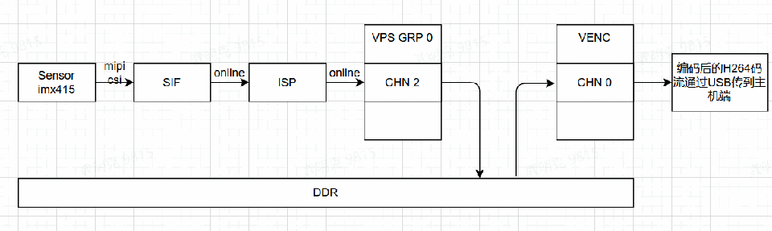
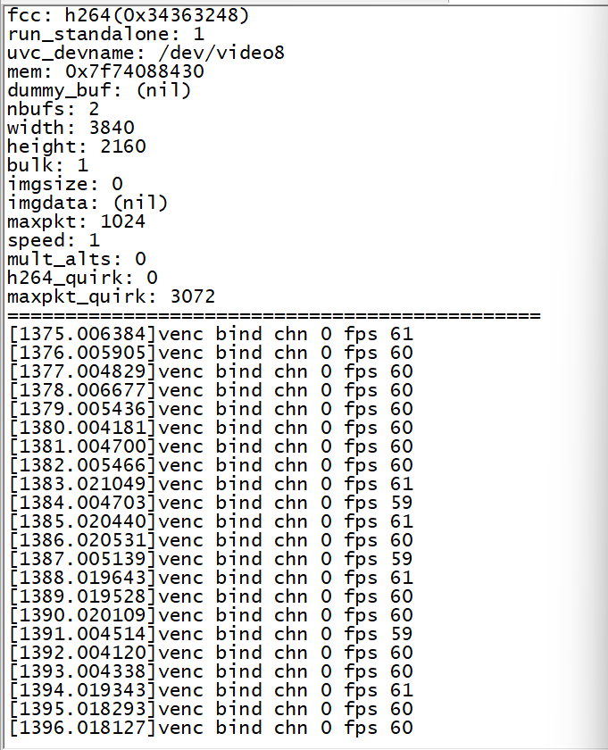
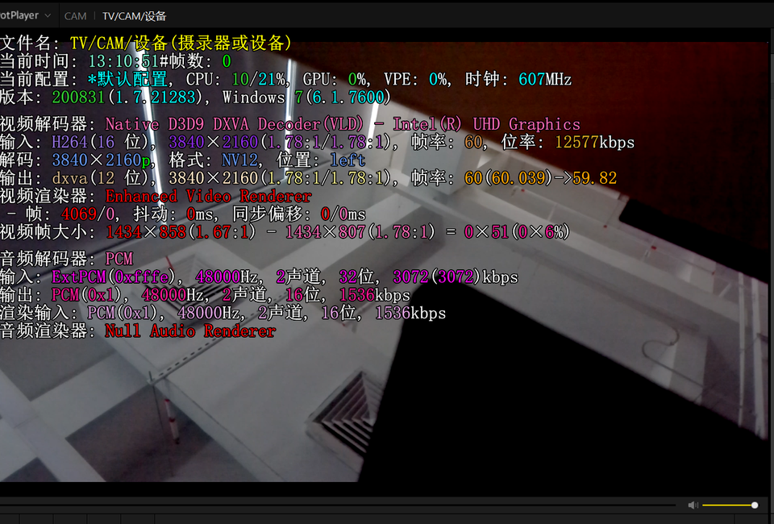
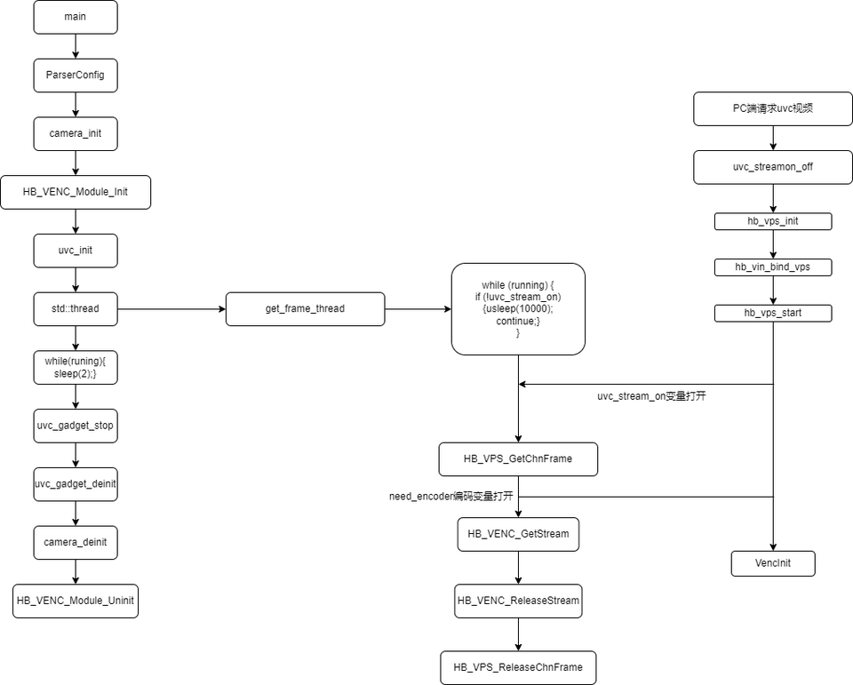
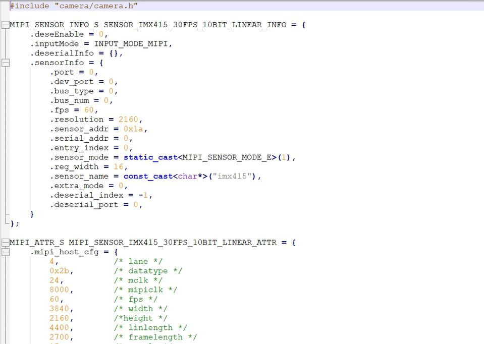
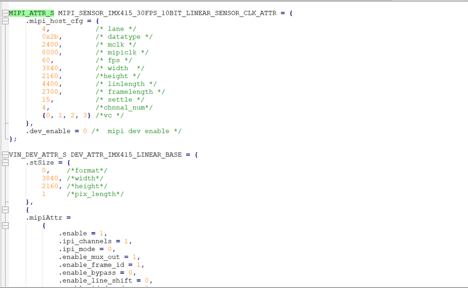
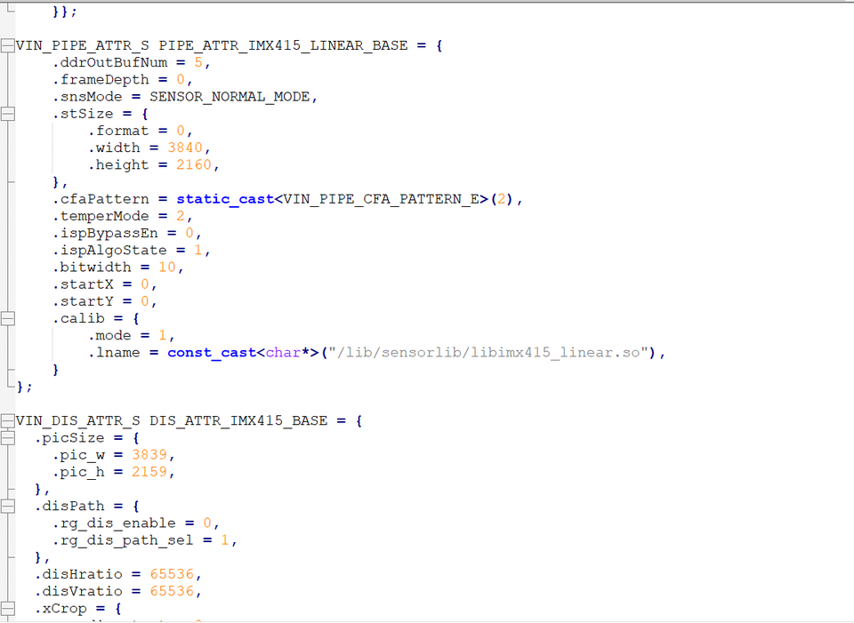
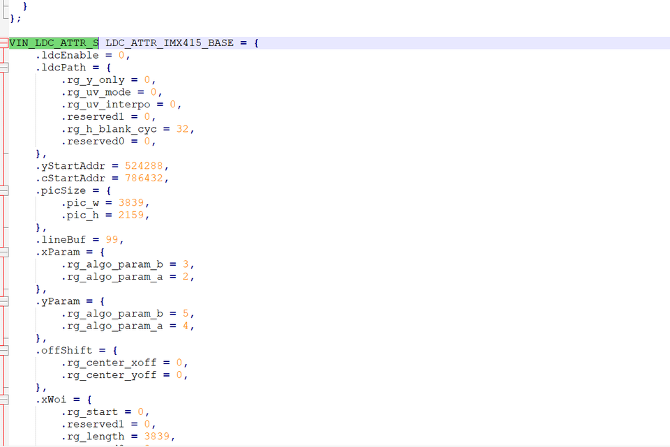
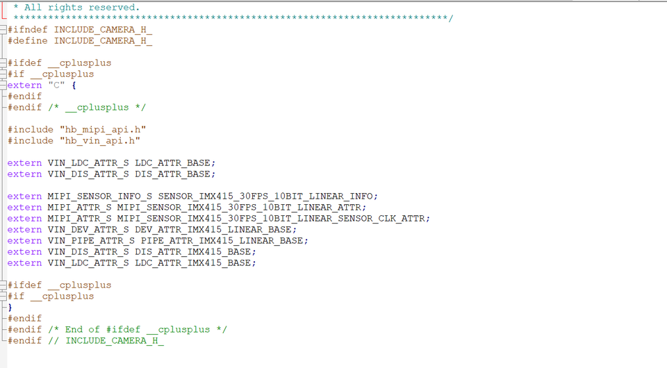

3.2.10. sample_usb_cam_4k60 使用说明
3.2.10.1. 程序功能
sample_usb_cam_4k60程序完成sensor、MIPI CSI 、SIF、 ISP 、VENC、USB模块的初始化，实现从sensor实时采集数据，到编码器编码输出，通过usb模块传输到pc端预览视频的功能
软件框图如下所示：

3.2.10.2. 功能使用
程序部署
把 sample/sample_usb_cam_4k60/out目录通过winscp等工具拷贝到板子的/userdata目录，进入板子的/userdata/out目录执行sh run_usb_cam_imx415.sh可以把程序运行起来，运行结果如下：
root@x3sdbx3-samsung2G-3200:/userdata/out# cd /userdata/
root@x3sdbx3-samsung2G-3200:/userdata/out# sh run_usb_cam_imx415.sh
run_usb_cam_imx415.sh: line 17: can't create /sys/bus/platform/drivers/ddr_monitor/read_qos_ctrl/all: Permission denied
run_usb_cam_imx415.sh: line 18: can't create /sys/bus/platform/drivers/ddr_monitor/write_qos_ctrl/all: Permission denied
>>>>>>>>>>>>> g1 is exist. delete it!
Detecting platform:
board : Hobot XJ3 SOC SDB
udc : b2000000.dwc3
Stopping the USB gadget
usb-gadget is not running
Detecting platform:
board : Hobot XJ3 SOC SDB
udc : b2000000.dwc3
show user config:
USB_VID: 0x1d6b
USB_PID: 0x0102
SERIAL: 0x6856e824
MANUF: hobot
PRODUCT: xj3
USE_UVC: true
USE_HID: false
USE_UAC1: false
USE_UAC2: false
USE_ADB: false
USE_MSD: false
USE_ACM: false
USE_RNDIS: false
USE_ECM: false
Creating the USB gadget
Loading composite module
Creating gadget directory g_comp
OK
init configfs...
Setting Vendor and Product ID's
OK
single function gadget
Setting English strings
OK
Creating Config
Init functions...
funciton_init, but do nothing, please init on demand
OK
Bind functions...
Bind functions according to .usb-config file
bind uvc...
Creating UVC gadget functionality : uvc.0
sh: 0: unknown operand
OK
Pre run userspace daemons(eg. adb)...
0
0
waiting
.
OK
Binding USB Device Controller
OK
Run some userspace daemons(eg. usb_camera)...
usb-gadget start succeed.
Open config file ./config/vin_vps_config_usb_cam.json success
Open config file1 ./config/vin_vps_config_usb_cam.json
Can not find key: tailWeight
Can not find key: manualTimeCount
Can not find key: autoTimeCount
Can not find key: manualAeM1
imx415_init_3840x2160_60_fps_linear_setting OK!
hb_vps_init grp_attr.maxW = 3840, grp_attr.maxH = 2160
chn_attr.width = 3840,chn_attr.height = 2160
set ipu chn Attr ok: GrpId = 0, chn_id = 2, chn_attr.enMirror = 0
start grp ok: grp_id = 0
vps1 us0 factor:0 x:0 y:0 w:968 h:544
vps1 us1 factor:0 x:0 y:0 w:968 h:544
vps1 us2 factor:0 x:0 y:0 w:968 h:544
vps1 us3 factor:0 x:0 y:0 w:968 h:544
vps1 us4 factor:0 x:0 y:0 w:968 h:544
vps1 us5 factor:0 x:0 y:0 w:968 h:544
vps1 us0 factor:0 x:0 y:0 w:968 h:544
vps1 us1 factor:0 x:0 y:0 w:968 h:544
vps1 us2 factor:0 x:0 y:0 w:968 h:544
vps1 us3 factor:0 x:0 y:0 w:968 h:544
vps1 us4 factor:0 x:0 y:0 w:968 h:544
vps1 us5 factor:0 x:0 y:0 w:968 h:544
vps1 us0 factor:0 x:0 y:0 w:648 h:364
vps1 us1 factor:0 x:0 y:0 w:648 h:364
vps1 us2 factor:0 x:0 y:0 w:648 h:364
vps1 us3 factor:0 x:0 y:0 w:648 h:364
vps1 us4 factor:0 x:0 y:0 w:648 h:364
vps1 us5 factor:0 x:0 y:0 w:648 h:364
try to construct empty ring queue##function uvc_gadget_init in
udc_find_video_device g_webcam
function name not matched. g_comp
:g_webcam
udc_find_video_device g_comp
using uvc device: /dev/video8
###uvc_gadget_init###
using uvc device: /dev/video8
width: 1280
height: 720
format: 2
io_method: 0
bulk_mode: 1
nbufs: 2
mult: 0
burst: 9
speed: 1
mult_alts: 0
h264_quirk: 0
maxpkt_quirk: 3072
uvc device is dwc3-gadget on bus gadget
uvc open succeeded, file descriptor = 22
uvc_size=4, maxpkt_size=3072
##function uvc_gadget_init succeed
##function uvc_gadget_start in
##function uvc_gadget_start succeed
##function uvc_loop in
dev->mask (0x0), entity_id(1), setup_ops((nil)), app doesn't care
control request (entity_id 01 req 86 cs 04)
send real error code last prepared(06)
control request (entity_id 00 req 81 cs 02)
dev->mask (0x0), entity_id(1), setup_ops((nil)), app doesn't care
control request (entity_id 01 req 86 cs 09)
send real error code last prepared(06)
control request (entity_id 00 req 81 cs 02)
dev->mask (0x0), entity_id(1), setup_ops((nil)), app doesn't care
control request (entity_id 01 req 86 cs 0b)
send real error code last prepared(06)
control request (entity_id 00 req 81 cs 02)
dev->mask (0x0), entity_id(1), setup_ops((nil)), app doesn't care
control request (entity_id 01 req 86 cs 0f)
send real error code last prepared(06)
control request (entity_id 00 req 81 cs 02)
dev->mask (0x0), entity_id(2), setup_ops((nil)), app doesn't care
control request (entity_id 02 req 86 cs 02)
send real error code last prepared(06)
control request (entity_id 00 req 81 cs 02)
dev->mask (0x0), entity_id(2), setup_ops((nil)), app doesn't care
control request (entity_id 02 req 86 cs 03)
send real error code last prepared(06)
control request (entity_id 00 req 81 cs 02)
dev->mask (0x0), entity_id(2), setup_ops((nil)), app doesn't care
control request (entity_id 02 req 86 cs 06)
send real error code last prepared(06)
control request (entity_id 00 req 81 cs 02)
dev->mask (0x0), entity_id(2), setup_ops((nil)), app doesn't care
control request (entity_id 02 req 86 cs 07)
send real error code last prepared(06)
control request (entity_id 00 req 81 cs 02)
dev->mask (0x0), entity_id(2), setup_ops((nil)), app doesn't care
control request (entity_id 02 req 86 cs 08)
send real error code last prepared(06)
control request (entity_id 00 req 81 cs 02)
dev->mask (0x0), entity_id(2), setup_ops((nil)), app doesn't care
control request (entity_id 02 req 86 cs 09)
send real error code last prepared(06)
control request (entity_id 00 req 81 cs 02)
dev->mask (0x0), entity_id(4), setup_ops((nil)), app doesn't care
control request (entity_id 04 req 85 cs 01)
send real error code last prepared(06)
control request (entity_id 00 req 81 cs 02)
运行效果说明
通过Potplayer播放器选择UVC Camera，分辨率选择H264 3840x2160P 60,打开设备就可以播放UVC视频流，打开视频流后x3侧的打印如下图:

potplayer跑起来后的截图如下：

3.2.10.3. 程序开发
模块划分
| 模块 | 目录 | 描述 |
|---|---|---|
| 头文件 | inc | 依赖的sensor头文件，json头文件，utils公共接口头文件，vio依赖公共头文件 |
| vio源代码模块 | src | sensor源代码文件，json配置文件解析源文件，utils公共接口源文件，系统vio公共接口源文件 |
| 主程序 | sample_usb_cam.cpp | main函数入口 |
顶层源码结构
.
├── Makefile #编译的主程序CMakeLists文件
├── vin_vps_config_usb_cam.json #imx415 sensor配置文件
├── inc
│ ├── camera #sensor依赖头文件
│ ├── json #json依赖头文件
│ ├── utils #编译依赖的公共头文件
│ └── vio #x3m的vio依赖头文件
├── lib
│ ├── jsoncpp #依赖的json库
├── libguvc.so #4k60的usb cam依赖库
├── libimx415.so #4k60的sensor驱动库
├── README.md #程序说明文档
├── run_usb_cam_imx415.sh #程序运行脚本
├── sample_usb_cam.cpp #主程序代码
├── src
│ ├── camera #sensor驱动配置代码
│ ├── utils #编译依赖的公共源代码
│ └── vio #x3m的vio依赖源文件
└── usb-gadget.sh #4k60的usb cam驱动加载脚本
头文件结构
.
├── camera
│ └── camera.h #sensor依赖头文件，增加新sensor需要修改此文件
├── json #开源的json库头文件
│ ├── allocator.h
│ ├── assertions.h
│ ├── autolink.h
│ ├── config.h
│ ├── features.h
│ ├── forwards.h
│ ├── json.h
│ ├── reader.h
│ ├── value.h
│ ├── version.h
│ └── writer.h
├── utils
│ ├── utils.h #ringbuf定义,dump图片视频等到文件功能的公共接口
│ └── yuv2yuv.h #使用neon加速的yuv格式转换标准接口
└── vio
├── vio_cfg.h #json配置文件解析头文件
├── vio_cfg_type.h #json配置属性值头文件
├── vio_log.h #打印控制头文件
├── vio_sys.h #vp初始化反初始化，系统vio各模块绑定接口头文件
├── vio_venc.h #X3系统编码模块初始化反初始化，启停，数据输入输出处理接口
├── vio_video.h #视频格式枚举定义等通用接口
├── vio_vin.h #vin结构体定义，初始化反初始化，启停，数据处理接口
└── vio_vps.h #vps初始化反初始化，启停，数据处理接口
源代码结构
.
├── camera #sensor依赖源代码文件，增加新sensor需要在此增加对对应sensor源代码文件
│ ├── camera_base.c
│ └── camera_imx415.cpp
├── utils
│ ├── utils.cpp #dump图片视频等到文件功能的公共接口源代码文件
│ └── yuv2yuv.c #使用neon加速的yuv格式转换标准接口源代码文件
└── vio
├── vio_cfg.cpp #json配置文件解析源代码文件
├── vio_sys.cpp #vp初始化反初始化，系统vio各模块绑定接口源代码文件
├── vio_venc.cpp #X3系统编码模块初始化反初始化，启停，数据输入输出处理接口源代码文件
├── vio_video.cpp #视频格式枚举定义等通用接口源代码文件
├── vio_vin.cpp #vin初始化反初始化，启停，数据处理接口源代码文件
└── vio_vps.cpp #vps初始化反初始化，启停，数据处理接口源代码文件
程序启动流程图如下：

编译
当前代码通过一个Makefile文件配置编译
依赖的多媒体头文件和库文件分别在BSP SDK的appsdk目录和system/rootfs_yocto/root目录下，编译时需要注意这两个依赖目录位置是否存在
安装交叉编译工具链后，安装交叉编译工具链后，执行 make 命令直接可以编译生成 sample_usb_cam 程序
cd sample/sample_usb_cam_4k60
$ make clean # 清理源码，保持干净的代码环境
$ make
... ... # 一大段编译打印
$ ls
Makefile sample_usb_cam inc README.md vin_vps_config_usb_cam.json libguvc.so libimx415.so sample_usb_cam.cpp sample_usb_cam.d src lib run_usb_cam_imx415.sh sample_usb_cam.obj
usb-gadget.sh
$ make install # 把产出物安装到 out 目录下
添加新sensor
如果有新sensor需要调试，请参考 src/camera 目录下的源码文件，对应添加一个新的sensor配置即可。
以IMX415的camera_imx415.cpp为例说明关键代码，需要添加MIPI_SENSOR_INFO_S、MIPI_ATTR_S、VIN_DEV_ATTR_S、VIN_PIPE_ATTR_S、VIN_DIS_ATTR_S、VIN_LDC_ATTR_S的新sensor结构体变量：




同时需要在inc/camera/camera.h把增加的新sensor的变量extern出来如下图imx415示例
